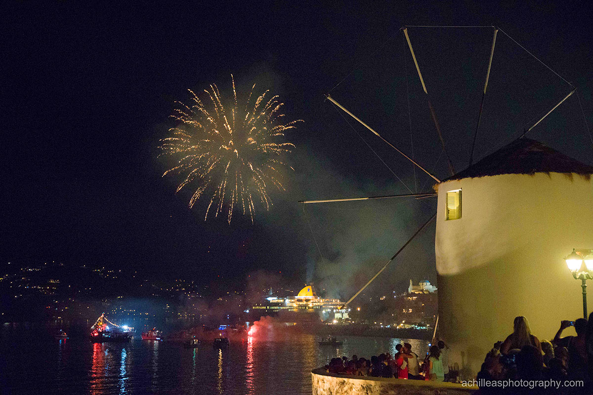

Announcements / Ανακοινωσεις
(11/09/22) Reception hours after 14/09 / Ώρες της ρεσεψιόν μετά τις 14/09
Reception hours after 14/09 will not be stable. You may need to call the reception to get informed, if you want to know the hours which it will be open.
Η ώρες λειτουργίας της ρεσεψιόν μετά τις 14/09 θα μεταβάλλονται από μέρα σε μέρα. Εάν θέλετε να ενημερωθείτε για το ωράριο, καλέστε τη ρεσεψιόν.
(30/08/22) Reception hours (only) on 01/09 / Ώρες της ρεσεψιόν (μόνο) για την 01/09
Reception on 01/09 will be open until 19:00. This change is only for this day, and the rest of them will be open the regular opening hours (except if there is another announcement on this).
Η ρεσεψιόν την 01/09 θα είναι ανοικτή ως της 19:00. Αυτή η αλλαγή αφορά μόνο αυτήν την ημέρα, και τις υπόλοιπες θα λειτουργεί κανονικά (εκτός αν υπάρξει νεότερη ανακοίνωση).
(25/08/22) Optical network from October / Οπτικές ίνες από τον Οκτώβριο
Since October (2022), telecommunications (and the internet connection) are being upgraded with the introduction of optical fibers. This change affects the greater Santa Maria area.
Από τον Οκτώβριο (2022) οι τηλεπικοινωνίες (και το διαδίκτυο) αναβαθμίζονται με την εισαγωγή οπτικών ινών. Αυτή η αλλαγή αφορά την ευρύτερη περιοχή της Σάντα Μαρίας.
(20/08/22) Naoussa settlement / Ο οικισμός της Νάουσας
As a settlement, Naoussa is said to have formed around the port of the same name during the Byzantine period. It had a fortified wall, a part of which is preserved to this day, which ended in a castellion that was a Venetian bastion. A part of which is also preserved. Finally, it is noted that both the Byzantine and post-Byzantine eras are reflected in the old houses and the small but historic churches of the wider area.[wiki]
Ως οικισμός, η Νάουσα λέγεται ότι διαμορφώθηκε γύρω από το ομώνυμο λιμάνι κατά τη βυζαντινή περίοδο. Έφερε οχυρωμένο τείχος, τμήμα του οποίου διασώζεται μέχρι σήμερα, το οποίο κατέληγε σε καστέλλιον που υπήρξε ενετικός προμαχώνας. Ένα τμήμα του επίσης σώζεται. Τέλος, σημειώνεται ότι τόσο η βυζαντινή όσο και η μεταβυζαντινή εποχή είναι αποτυπωμένες στα παλιά σπίτια και τις μικρές μεν αλλά ιστορικές εκκλησίες της ευρύτερης περιοχής.[wiki]
(17/08/22) Sewage system in Greece / Το αποχετευτικό σύστημα στην Ελλάδα
The sewage system in Greece is not designed to handle the flushing of toilet paper. If you did, then you are likely to block the pipes in the sewer system. At best you'll cause a blockage in your toilet, at worse, you'll inconvenience a few other people.
Το αποχετευτικό σύστημα στην Ελλάδα δεν έχει σχεδιαστεί για να διαχειρίζεται χαρτιά υγείας. Εάν πετάτε απορρίμματα στην τουαλέτα, είναι πιθανό να φράξετε τους σωλήνες στο αποχετευτικό σύστημα. Στην καλύτερη περίπτωση, θα προκαλέσετε απόφραξη στην τουαλέτα σας, στη χειρότερη, θα ταλαιπωρήσετε περισσότερα άτομα.
(09/08/22) 15th of August on Paros / Στις 15 Αυγούστου στην Πάρο

15th of August is a special day on Paros. Do not miss out on the various events taking place mainly in Paroikia.
Διάφορες εκδηλώσεις πραγματοποιούνται την 15η Αυγούστου στην Πάρο. Μην παραλείψετε να τις δείτε, κυρίως στην Παροικία.
(06/08/22) Do not miss out on «Paros Park» / Μην παραλείψετε να επισκεφθείτε το «Πάρκο Πάρου»
Various events, such as film screenings and performances, are taking place this summer at Paros Park.
Διάφορες εκδηλώσεις, όπως προβολές ταινιών και παραστάσεις, πραγματοποιούνται αυτό το καλοκαίρι στο Πάρκο Πάρου.
(05/08/22) Creation of this webpage / Δημιουργία αυτής της ιστοσελίδας
Fragos Apartments now have their own webpage. Surf and find information about the accomodation and the nearby area.
Τα ενοικιαζόμενα Φράγκος πλέον διαθέτουν την δική τους ιστοσελίδα. Πλοηγηθείτε και βρείτε πληροφορίες για το κατάλυμα και για την γύρω περιοχή.